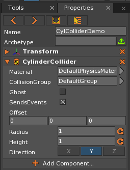
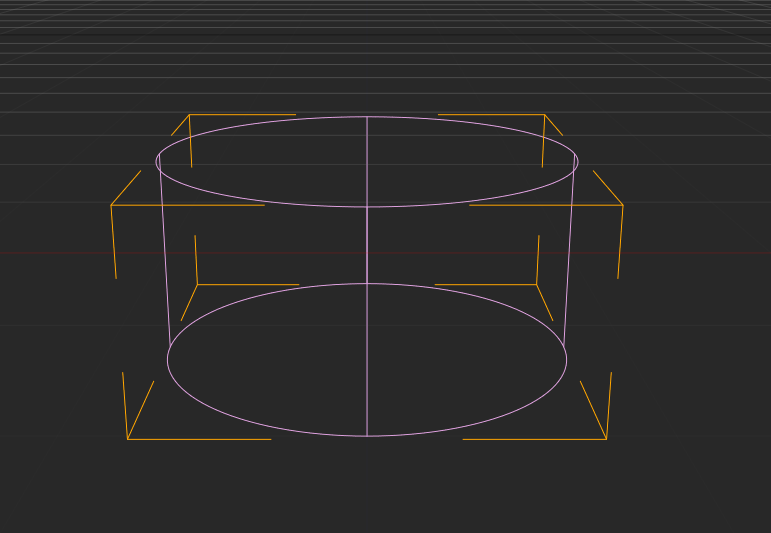
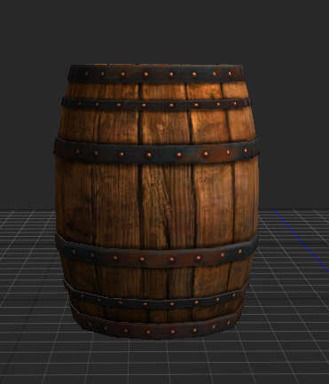
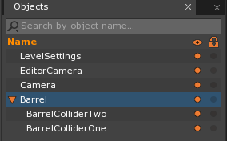
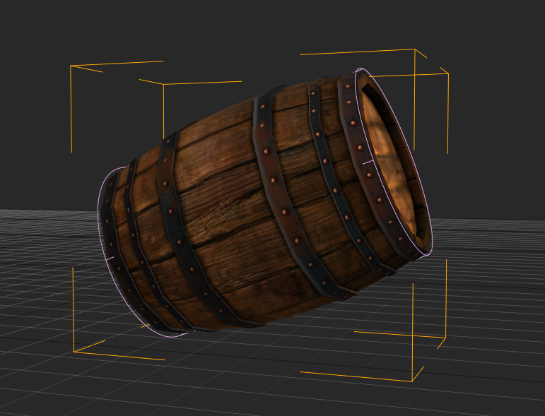
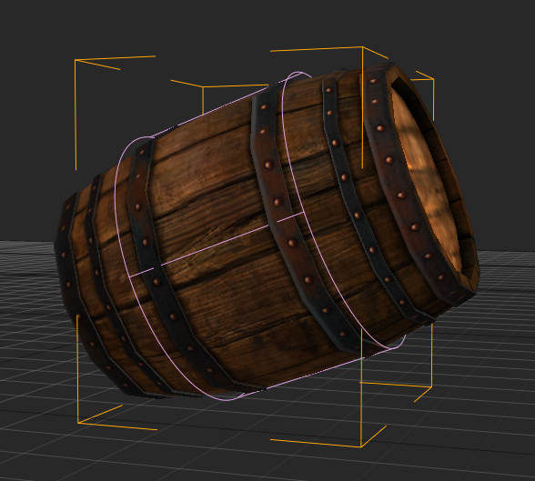
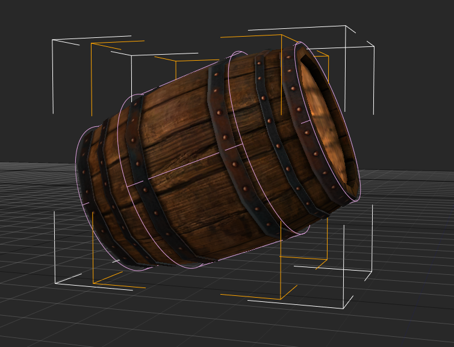

CylinderCollider
The CylinderCollider component is one of the primitive Collider types available in the Zero Engine. It takes the shape of a cylinder scaled by radius and height properties set by the user. The CylinderCollider component can be added to any object as long as it has a Transform component.
Common Uses
- Defining collision boundaries of either cylindrical objects or parts of an object where a cylinder provides the most efficient and/or complete coverage.
- Defining the boundaries for a cylindrical-shaped
Regionwith aPhysicsEffectattached to it. - Defining the boundaries for a cylindrical-shaped, collision-based trigger volume that causes a
CollisionEventto be dispatched.
Using CylinderCollider
Creating a CylinderCollider
When adding a CylinderCollider to an otherwise empty Transform object, the CylinderCollider still retains all of its functionality and properties. The In-Editor properties for the CylinderCollider can be seen in the following picture, where a CylinderCollider component has been placed on an otherwise empty Transform object:

When this object is selected and viewed on the Level Screen, the only thing that will be visible are the DebugDraw lines marking the boundaries of the CylinderCollider; that is, the area in which collision will be resolved if this Collider comes into contact with another Collider (assuming the Colliders belong to the default CollisionGroup ).

Applying CylinderCollider to an Object
The CylinderCollider component is best used for models that are cylindrically-shaped or for parts of an object that where a cylinder provides the best coverage. To see how a CylinderCollider may be used within a project, a three-dimensional model of a barrel will be used, as can be seen here in the Level Window:

Attaching CylinderColliders to an Object
In order to simulate realistic collision for the entire barrel, only two CylinderColliders are needed. The process for attaching these colliders to the Barrel object is illustrated in the following screenshots.
The Objects Window with two parented object containg CylinderCollider components

The first CylinderCollider passes all the way through the Barrel object, ending and surrounding each end of the Barrel

The second CylinderCollider fits snugly around the middle section of the Barrel object, providing coverage as the radius of the Barrel expands

The Barrel object in the Level Window with both CylinderColliders DebugDraw lines visible

As can be seen, the middle CylinderCollider fits snugly around the thickest part of the barrel, while the top and bottom CylinderCollider can only be seen around the edge of the very top and bottom, due to its lower radius. The reason for making the top and bottom CylinderCollider smaller is so that if the barrel falls or is hit, causing it to roll around, the collision for the barrel will act much more life-like than if only one collider is used. While the two CylinderColliders overlap, since they are part of the same object hierarchy, there is no collision conflict.
Demonstration
The Barrel should mimic how an empty barrel would react in the same condition in real-life (to only a very small degree of precision, of course), due to the two CylinderColliders in use:

When the Barrel hits the floor, the first CylinderCollider resolves the collision, causing the Barrel object to slightly bounce over to its other side where the edges of both the first and second CylinderColliders resolves collision with the floor. It bounces back and forth until only the CylinderCollider in the middle of the Barrel object is resolving collision, allowing the barrel to smoothly roll down the rest of the ramp.